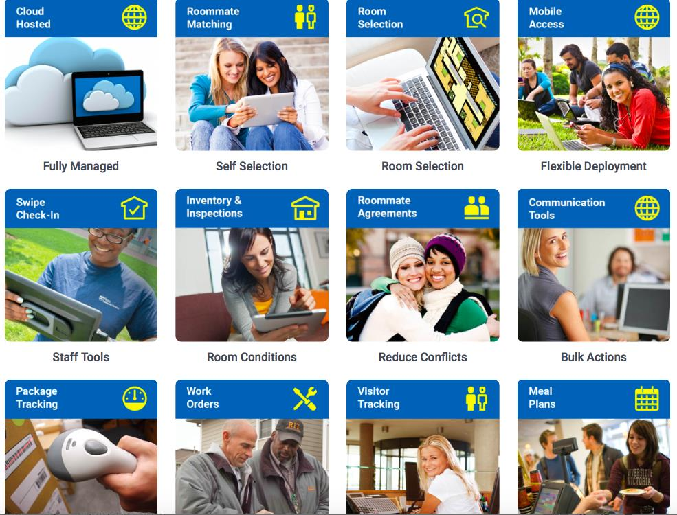
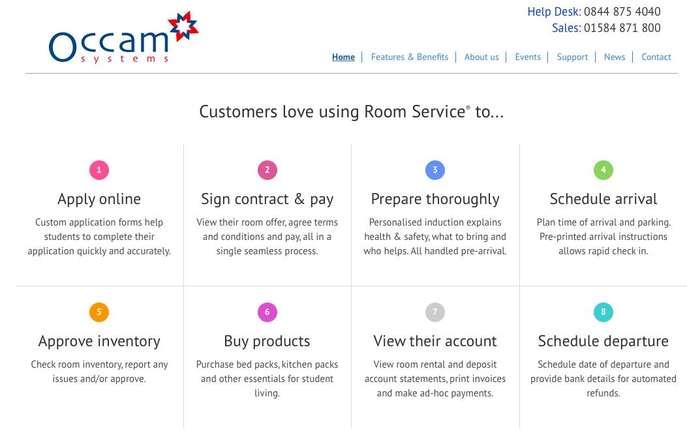
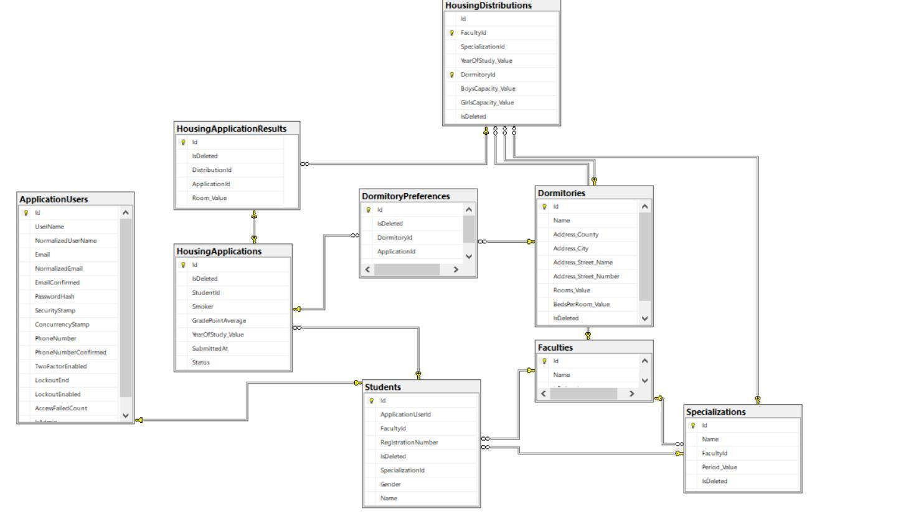

Data publicării: 12.07.2018
Autor articol: Corina Forascu
Cele mai mari universităţi din lume arată un interes deosebit pentru ca studenţii să locuiască în campusuri universitare pe toată perioada studiilor, deoarece viaţa în campus îi ajută să se acomodeze mai uşor cu mediul academic, iar trecerea de la liceu la universitate va fi mult mai uşoară dacă acomodarea începe încă din campusul studențesc. În campusurile universitare studenţii sunt ajutaţi de către colegii mai mari, au acces la cantină, cabinet medical, bibliotecă şi săli pentru lectură. În campusurile studențești studenţii au acces la activităţi culturale, ştiinţifice, evenimente educaţionale la care pot participa, pentru a-i ajuta în drumul lor spre succes. Procesul actual de obținere a unui loc de cazare în căminele Universității Alexandru Ioan Cuza din Iași nu îi atrage pe studenţi să îşi dorească să locuiască în cămine pe perioada studenţiei deoarece procesul este destul de complicat: etapele sunt multe şi necesită mult timp, iar în zilele noastre fiind înconjuraţi de tehnologie, preferăm să facem lucrurile cât mai simplu, fără să pierdem mult timp (acceptăm lucrurile mai scumpe care necesită mai puţin timp, decât să optăm pentru ceva mai ieftin, dar în care trebuie să investim timp). Fie că vrem sau nu, timpul devine duşmanul nostru, iar astfel preferăm să căutăm un agent imobiliar, care să ne caute cazare pe perioada studenţiei, chiar dacă implică costuri pe care poate nu ni le permitem, decât să alegem să facem toate demersurile pentru a sta în unul din căminele studenţeşti puse la dispoziţie de către universitate, care din punct de vedere financiar sunt accesibile pentru toate categoriile de studenţi. Etapele sistemului prezent de cazare din cadrul universităţii sunt următoarele: depunerea cererilor de cazare, afişarea listelor cu studenţii care au primit dreptul de cazare, eliberarea dispoziţiilor individuale de cazare şi a legitimaţiilor, cazarea efectivă. Pentru studenţii care doresc să primescă dreptul de cazare în căminele universităţii, etapele menţionate mai sus pot fi optimizate prin mutarea acestui proces într-o aplicaţie web, sistem de management online al cazării.
Un sistem de management al cazării studenților (Iraba, 2009; Humming Bird, 2015) poate cuprinde de la căteva funcționalități primare până la unele de nivel foarte ridicat. În continuare includem câteva dintre cele mai frecvente funcționalități ale unui asemenea sistem de management:
- Aplicație online (față de un sistem clasic de lucru pe bază de formulare completate pe hârtie), cu design simplu, atractiv, intuitiv, care să facă o primă distincție clară între studenții nou admiși și studenții cu vechime; studenții pot să aplice pentru cazare online, urmărind orcând (24 de ore din 24) în aplicație care le este statutul, care sunt pașii pe care îi au de făcut și cerințele pe care trebuie să le îndeplinească
- Capacitatea de a realiza cazarea automat, scăzând considerabil timpul necesar distribuirii studenților în cămine
- Maximizarea gradului de ocupare a spațiilor din cămine, evental din diferitele campusuri ale unei aceleiași universități
- Capacitatea de a răspunde rapid necesităților în schimbare ale studenților unei aceleiași universități, de la o specializare la alta, de la un an de studiu la altul, de la o generație la alta
- Integrare cu alte sisteme de gestiune dintr-o universitate (de exemplu gestiunea activităților academice ale studenților, ceea ce în UAIC este folosit deja, eSims, sau cu un sistem de gestiune a contabilității, sau serviciul de Achiziții)
- Sistem de generare a diferitelor tipuri de rapoarte atât pentru studenți cât și pentru personalul administrativ
- Posibilitatea ca studenții să își aleagă tipul de cameră, optând individual sau în grup pentru cazare
- Posibilitatea de a achiziționa diferite produse necesare vieții în cămin (lenjerie de pat, electronice, veselă, cosmetice de uz curent) sau servicii (telefonie, internet etc.)
- Alegerea profilului colegilor de cameră și ulterior maximizarea potrivirilor între colegii de cameră, pe baza unui algoritm de selecție care permite urgentarea finalizării cazărilor
- Cazarea și decazarea online, cu verificarea statusului fiecărui student în ceea ce privește plata utilităților, a posibilelor daune sau datorii mai vechi
- Plata facilităților și / sau a chiriei
- Raportarea incidentelor, defecțiunilor, problemelor în folosirea camerei și a utilităților din cămin, permițînd și raportarea sub formă de fotografie, eventual cu localizarea prin GPS
- Integrarea cu tehnologii de scanare, pentru a permite, dacă este cazul, folosirea cardurilor de identitate universitară ale studenților
- Flexibilitate în modificarea capacității de cazare, ca în cazul adăugării de noi cămine (contrucții sau achiziții noi ale unei universități) sau a retragerii temporare a unora, ca în cazul intrării unor cămine în reparații capitale
- Accesibil pe orice fel de dispozitiv (fix, mobil), cu orice sistem de operare
Înainte de a începe proiectarea și realizarea unei aplicații proprii, utilă în cadrul UAIC, dezvoltată în cadrul unei lucrări de licență (Muntean, 2018) coordonate de autoare, au fost studiate căteva aplicații de management al cazării existente, contra-cost, pe piață. Dintre acestea enumerăm mai jos pe cele mai frecvent folosite de comunitatea academică internațională.
- StarRez – http://www.starrez.com – oferă încă din 1992 soluții software integrate pentru cazarea studenților și activități corelate vieții din campusurile studențești. Soluțile oferite de StarRez sunt folosite de peste 650 de universități din întreaga lume (15 țări), ajungând la un total de aproximativ 1.600.000 studenți a căror cazare este gestionată prin aceste soluții

- Room Service – http://www.occam.co.uk – pachet de soluții software furnizat de Occam Sytems pentru aproximativ un sfert dintre universitățile britanice, începând cu 1998. Pe lângă un set imresionant de funcționalitărți (dintre cele mai sus menționate). Room Service integrează și funcționalități ale rețelelor sociale

- RMS – software furnizat de compania Mercury, încă din 1994 – http://mercury.rms-inc.com – preponderent pentru universitățile nord-americane
Luând în considerare principalele funcționalități ale platformelor mai sus menționate, având în vedere timpul și resursele avute la dispoziție, am decis crearea de la zero a unei aplicații web care să fie adaptată în primul rând condițiilor de cazare actuale din Universitatea noastră, anume:
În campusurile universităţii pot beneficia de cazare studenţii români şi studenţii cetăţeni ai statelor care fac parte din Uniunea Europeană sau ai altor state care îndeplinesc anumite condiţii ce vor fi menţionate mai jos.
Universitatea dispune de trei campusuri: Târguşor Copou (patru cămine), Titu Maiorescu (patru cămine) şi Codrescu (cinci cămine), dar şi de două cămine cu regim hotelier: Gaudeamus şi Akademos.
Pot beneficia de cazare studenţii înmatriculaţi la zi, buget sau taxă, indiferent de ciclul de studii, care nu au domiciliul stabil în Municipiul Iaşi. Repartizarea studenţilor în cămine se face după media obţinută în anul universitar anterior. Pentru studenţii înmatriculaţi în anul I se ia în considerare media obţinută la admitere.
Sunt şi câteva situaţii speciale: studenţii orfani de ambii părinţi, proveniţi din casele de copii sau plasament familial beneficiază de prioritate în primirea unui loc de cazare.
Studenţii plecaţi cu o mobilitate de studiu în primul semestru, la întoarcerea la Universitate, redobândesc un loc în cămin.
Studenţii familişti sunt cazaţi în limita locurilor disponibile. Dacă ambii soţi sunt studenţi la Universitatea „Alexandru Ioan Cuza” din Iaşi, aceştia vor avea prioritate.
În vederea obţinerii unui loc de cazare, cu 60 de zile înainte de finalizarea anului universitar în curs, trebuie îndeplinite următoarele formalităţi:
- studenţii care solicită cazare să depună o cerere sau să completeze tabelul de cazare; studentul care nu formulează o cerere scrisă sau nu completează tabelul de cazare, se consideră, din oficiu, că nu solicită un loc în căminele studenţeşti;
- studenţii care solicită cazare pe criterii sociale trebuie să depună, la secretariatele facultăţilor, dosare conţinând documentele justificative.
Platforma web dezvoltată în cadrul lucrării de licență folosește o bază de date relaționale, MS SQL, pentru stocarea informaţiilor despre sesiunile de cazare, studenţi, opţiunile acestora şi în final clasamentul cu fiecare student admis la cazare şi căminul în care a fost repartizat.
Aplicaţia propriu-zisă este împărţită în două mari capitole: partea de server şi partea de client.
Implementarea părţii de server a avut ca scop obţinerea unei aplicaţii eficiente, uşor de utilizat și de asemenea ușor de extins în aplicații vitoare. S-au folosit unele dintre cele mai noi tehnologii:
- un framework modern, .NET Core 2.0 Web API;
- o arhitectură de tip onion (Shekhawat, 2017);
- un ORM (Entiy Framework Core 2.0) pentru crearea şi accesul la baza de date (EFC, 2016).
Dezvoltarea aplicaţiei client a fost realizată pe platforma Angular, cu cea mai nouă versiune: Angular 6, care a fost lansată pe 6 mai 2018 (Fluin, 2018).
Aplicaţia realizată este configurabilă, permițând adăugarea de facultăţi cu specializări şi ani de studiu pe fiecare specializare în parte, adăugarea de cămine împreună cu numărul de locuri pe fiecare cămin în parte pentru fiecare facultate. Înscrierea studentului în cadrul sesiunii de cazare active şi vizualizarea status-ului aplicării acestuia reprezintă un punct important pentru că în orice moment al procesului de cazare studentul poate intra să verifice dacă dosarul său este validat, dar şi dacă a prins un loc în căminele dorite. Configurabilitatea la o scară atât de largă permite şi integrarea cu alte soft-uri care ţin la momentul actual evidenţa studenţilor cazaţi în cămine, astfel că acest sistem poate genera un raport, care să fie importat sau pot fi implementate servicii care să expună clasamentul final.
În etapa de analiză și proiectare, în urma analizei, stuctura entităţilor care fac parte din aplicaţie este următoarea:
- Students – studenţii legaţi de contextul academic din care fac parte
- Specializations – specializările pe fiecare facultate în parte
- Faculties – facultăţile din cadrul universităţii
- Dormitories – căminele din cadrul campusurilor
- ApplicationUsers – utilizatorii care au ales să se înscrie la cazare împreună cu toate informaţiile cerute în cadrul formularului de ,,Apply”
- DormitoryPreferences – priorităţile căminelor fiecărui utilizator care a ales să aplice pentu cazare
- HousingDistributions – legătura dintre cămine şi facultăţi, inclusiv numărul de locuri din fiecare cămin pe fiecare entitate universitară în parte
- HousingApplications – legătura dintre studenţi şi preferinţele fiecărei aplicări
- HousingApplicationResults – aceată tabelă permite generarea clasamentului final, aici se găseşte fiecare aplicare şi căminul în care a fost repartizată
Entităţile împreună cu toate field-urile şi relaţiile dintre ele pot fi observate şi în diagrama bazei de date de mai jos.

Accesul în aplicaţie de face pe bază de roluri. Sunt definite două tipuri de roluri: administrator şi student. Aplicaţia este complet configurabilă: de la promovarea unui cont de student la administrator până la setarea numărului de locuri pe fiecare cămin în parte ţinând cont de facultate, program de studii, anul de studii al studenţilor şi sexul acestora.
Cea mai complexă parte a platformei dezvoltate o reprezintă algoritmul de repartizare a studenţilor în cămine. Acest algoritm este bazat în totalitate pe regulamentul de cazare din cadrul Universităţii Alexandru Ioan Cuza, anterior descris. Algoritmul ia în considerare toţi studenţii care au dosarele marcate ca fiind valide. Aceştia sunt ordonaţi descrescător după medie. Pe rând în ordinea priorităţii se iau căminele selectate de către fiecare aplicant care este eligibil pentru repartizare. Cei cu mediile cele mai mari ajung să fie repartizaţi în căminele în care îşi doresc, bineînţeles în limita locurilor disponibile. În cazurile speciale, ca de exemplu în cazul în care mai am un singur loc într-un cămin şi doi studenţi cu aceeaşi medie şi cu aceeaşi prioritate pentru căminul respectiv, atunci se vor lua în considerare situaţiile speciale, prioritate având cei care aparţin unor cazuri speciale (părinţii sunt cadre didactice, este o persoană cu dizabilităţi, este părinte şi altele). Tabieturile aplicanţilor sunt luate în considerare la finalul algoritmului: după ce repartizarea efectivă a fost făcută, pe camere se vor împărţi studenţii şi astfel vor ajunge sa fie în aceeaşi cameră sau în camere apropiate cei care au aceleaşi tabieturi.
Iniţial aplicaţia are un cont de administrator, apoi urmând ca toţi ceilalţi utilizatori să se înregistreze în aplicaţie, conturile iniţiale fiind de student, dar administratorul le poate schimba în administrator.
În momentul accesării aplicaţiei se deschide pagina de logare, iar în cazul în care nu există deja creat un cont, va trebui să fie folosit butonul ,,Create one!” şi se va deschide o nouă pagină pentru a secrea un contunde se vor cere informaţii astfel încât să fie identificat contextul din care face parte studentul care doreşte să se înregistreze în aplicaţie.
În cazul în care înregistrarea se face cu un cont de student, se va încărca o nouă pagină în care un meniu în partea sângă permite ca utilizatorul să aplice pentru cazare, să verifice statusul dosarului, să vadă rezultatele finale sau să iasă din cont.
Pentru a se face înscrierea la cazare trebuie folosit butonul ,,Apply” şi trebuie completat formularul care conţine media, anul de studiu, tabieturile şi căminele în ordinea preferinţelor.
Dacă înscrierea la cazare, a fot deja făcută, atunci poate fi verificat verificaţi statusul formularului completat în secţiunea ,,Home”, unde se va putea verifica și dacă dosarul a fost validat sau nu.
Pentru a ieşi din cont se folosește butonul,,Log out”.
Dacă vă logaţi cu un cont de administrator, aveţi un meniu pe partea stângă de unde puteţi alege una din operaţiile pe care doriţi să le faceţi: să promovaţi un cont la stadiul de administrator, să configuraţi facultăţile şi căminele, să validaţi formularele introduse de studenţi, să generaţi clasamentul, să adăugaţi perioada în care studenţii de pot înscrie sau să vă deconectaţi. Pentru a promova utilizatorii la stadiul de administrator veţi alege din meniu ,,Users”, unde vi se va afişa lista cu toţi utilizatorii şi posibilitatea de a da sau a retrage dreptul de administrator oricărui utilizator.
Configurarea facultăţilor, prin butoul ,,Faculties” din meniu, este cea mai complicată parte de configurare deoarece adăugarea / modificarea unei facultăţi mai implică şi adăugarea / modificarea distribuţiei, adică pe fiecare specializare şi an de studiu în parte se vor adăuga căminele unde pot fi cazaţi studenţii de la facultatea respectivă şi numărul de locuri pentru fiecare cămin în parte.
Secţiunea ,,Dormitories” reprezintă configurarea căminelor, aici este locul în care adăugăm şi numărul de locuri pe fiecară cămin în parte şi numărul de paturi disponibile din fiecare cameră.
Validarea dosarelor se face în modulul ,,Students” unde se pot vizualiza toate dosarele studenţilor şi dacă toate informaţiile sunt corecte atunci le bifăm ca fiind ,,Approve”, altfel le bifăm ca fiind ,,Reject”.
Generarea clasamentului o realizăm din ,,Applications” unde după ce perioada de înscrieri a studenţilor s-a terminat, generăm raportul care reprezintă repartizarea studenţilor pe fiecară cămin în parte, respectând regulamentul de cazare al Universităţii Alexandru Ioan Cuza, anterior prezentat.
Setarea perioadei în care studenţii pot aplica pentru cazare se face din modulul ,,Settings”. În momentul în care perioada este depăşită, nu vor mai putea fi adăugate formulare de înscriere.
Pentru ca actuala aplicaţie să funcţioneze aşa cum ne aşteptăm trebuie ca un administrator să o configureze, iar studenţii care îşi doresc să fie cazaţi în spaţiile puse la dispoziţie de către universitate trebuie să îşi creeze un cont pe platformă şi să se înscrie la cazare.
Pentru viitor propunem realizarea unui import din sistemul actual de management al şcolarităţii pe care îl foloseşte universitatea unde găsim toată situaţia şcolară a studenţilor şi astfel putem realiza o comunicare între aplicaţii. Această comunicare poate fi realizată în două moduri: eSIMS-ul să ne pună la dispoziţie un fişier excel cu toate datele de care avem nevoie despre studenţi sau să ne pună la dispoziţie servicii REST cu ajutorul cărora aplicația să poată lua datele necesare.
O altă idee de îmbunătăţire este integrarea cu un server de e-mail cu ajutorul căruia studenţii să primească un mesaj prin care să fie notificaţi în momentul în care statusul dosarului a fost modificat de către un administrator, fără a mai trebui să se logheze în aplicaţie pentru a verifica dacă aplicarea lor a fost validată.
Referințe
- Humming Bird (2015) Student Registration System. Software Design Specification. Rajarata University of Sri Lanka
- Entity Framework Core, November 2016
- Stephen Fluin (2018). Version 6 of Angular Now Available. Online article – http://blog.angular.io/version-6-of-angular-now-available-cc56b0efa7a4
- Marie Louise Iraba. (2009). Student Residence Management System. BSc thesis. University of the Western Cape, Cape Town, South Africa.
- Sandeep Singh Shekhawat. (2017). Onion Architecture In ASP.NET Core MVC. Online blog
- Mateusz Stasch. (2015). CQRS – Simple architecture_. Online article